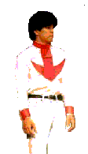
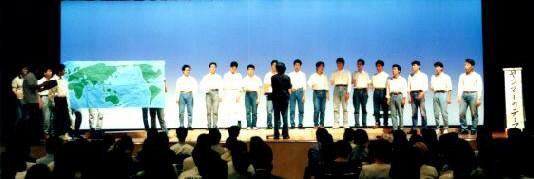

top
profile
history
practice
info
bbs
link

かながわフリーダム・シンガーズ
第一回演奏会写真集
第二ステージ ＮＨＫコンクール課題曲集（中館伸一指揮、岩本達明伴奏）

第四ステージ ｢フリーダムといっしょ─Freedom(気まま)な男たち─｣より、
『Ｙ坊・Ｍ坊天気予報』（中館伸一指揮）
※Ｙ坊役（世界地図左）は望月哲也（'96年度東京芸大『Messiah』テノールソリスト）。
戻る
Copyright (C) 2003 Kanagawa Freedom Singers All rights reserved.